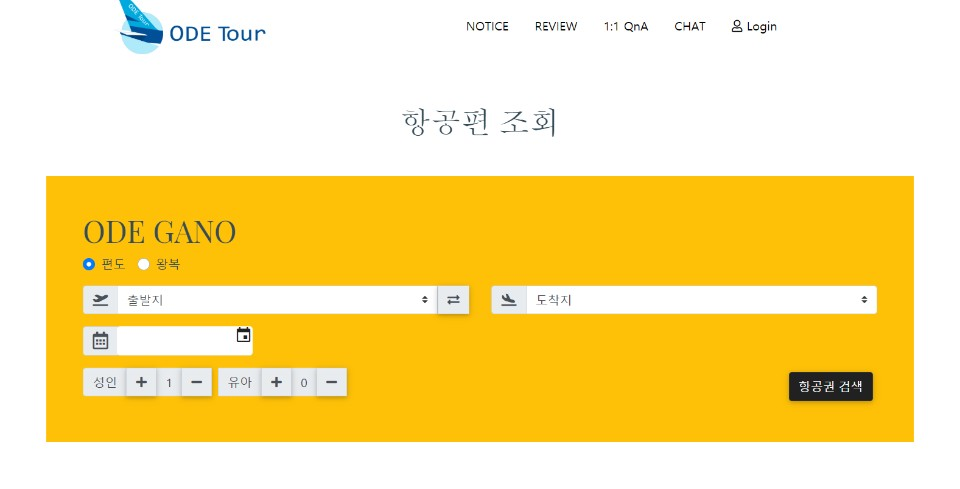

SHOP : DAILY-UK
JAVA/JSP 기반의 가상 인터넷 쇼핑몰을 제작
이메일 인증을 통한 회원가입과 회원 정보수정 그리고 가입시
다음 우편번호 API를 이용하여 주소를 입력할 수 있게 했습니다.
또한, 로그인시 주소를 저장하여 브라우저가 종료될 때까지
로그인 상태가 유지되도록 하며 일반 게시판과 리뷰 게시판에
읽기, 수정, 삭제, 사진 업로드를 구현했습니다.

ODE-Tour : ODE-GANO
JAVA/JSP Model2기반의 MVC패턴으로 항공 실시간 조회 사이트를 제작
회원가입과 로그인 페이지를 구현하였으며 그 안에서 이메일 인증, 이메일 중복체크,
비밀번호 일치여부 확인, 캘린더를 사용하여 표현하였습니다.
그리고 관리자 페이지를 만들어 전체 회원 리스트 출력, 회원 검색, 문의내역이
출력 가능하도록 구현하였습니다. 그리고 게시판, 리뷰, 1:1 Q&A게시판을
구현 하였으며 사용자가 글작성시 관리자에게 전송하여 확인 가능하게 했습니다.
그리고 실시간 채팅방을 구현해 사용자들끼리 정보를 공유할 수 있도록 만들었습니다.
또한, 항공 실시간 조회 사이트 이므로 실시간 항공편 검색(편도,왕복), 각 공항별 주차현황,
실제 결제 시스템 까지 구현해 사용자들의 편의를 생각해 구현했습니다.